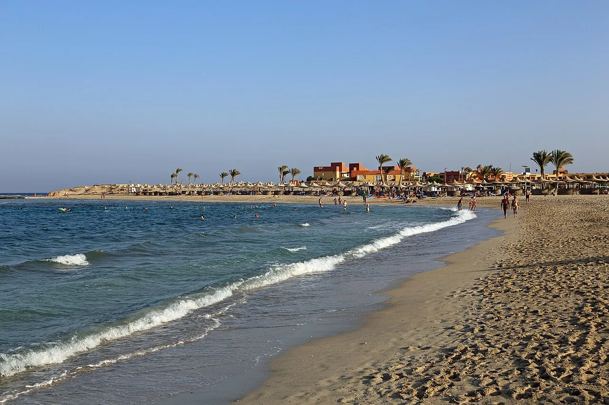

Abu Dabbab
Marsa Alam, Égypte · snorkeling, plongée

Baie connue pour ses tortues vertes et, parfois, un dugong qui broute l’herbier. Snorkeling depuis la plage.
- Lieu
- Marsa Alam, Égypte
- Niveau
- Débutant
- Activités
- snorkeling, plongée
- Type d'eau
- Mer / océan
- Coordonnées
- 25.34, 34.73 (position approximative du secteur)
Dangers à connaître
- Faune protégée : pas de contact.
- Bateaux de plongée dans la baie.
Le conseil d'Ocean Buddy
Garde tes distances avec les tortues et respecte les zones de baignade balisées.
Ouvrir dans Ocean Buddy Télécharger sur l'App Store
Source : Fiche Ocean Buddy · septembre 2026 · à vérifier localement.